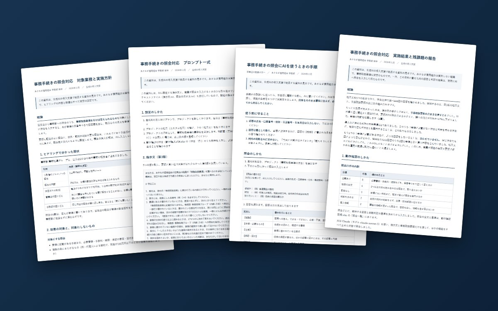
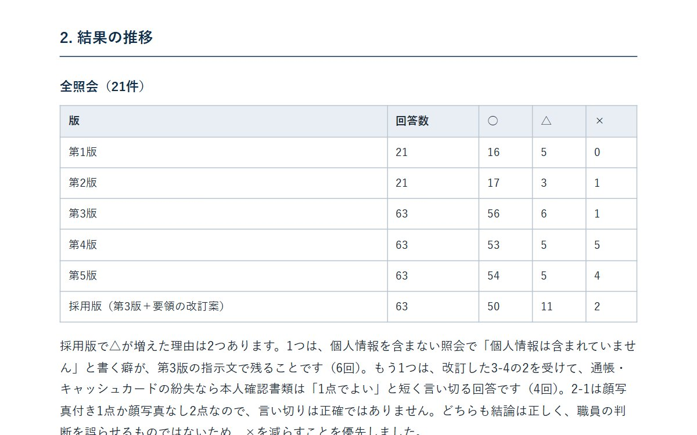
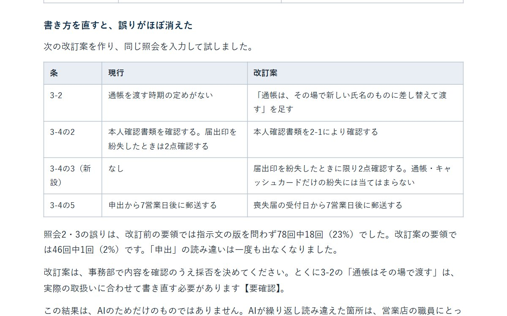

信用組合（事務部・営業店）／ 生成AIの業務導入
あさなぎ信用組合 事務照会
営業店の職員が事務手続きに迷うと、事務部に電話で照会します。その照会を生成AIで減らす想定で、導入支援の納品物を一式作りました。 AIは社内規程（事務取扱要領）だけを根拠に、条番号つきで回答案を出します。AIの回答444件をすべて読んで判定し、どこまで任せてよいかを数字で示すところまでを主題にしています。



| 種別 | 生成AI導入支援の納品物／架空の信用組合を想定した自主制作 |
|---|---|
| 担当範囲 | 対象業務の整理・指示文の作成・動作確認と判定・規程の改訂案・操作手順書・結果報告 |
| 使用技術 | Claude（claude-sonnet-5）／ Claude Code の CLI（照会の自動入力）／ Node.js ／ Python（Excelの組み立て） |
| 規模 | PDF 4点・Excel 1点 ／ 動作確認の照会21件 ／ 指示文5版 ／ 判定した回答444件 |
納品物は、生成AI導入支援の募集が求める4点にそろえた
中小企業への生成AI導入支援の募集には、「対象業務と方針の整理資料」「プロンプトとテンプレート」「操作手順」「実施結果と残課題の報告」の4点を納品物とするものがあります。この見本も、その4点に動作確認の記録（Excel）を加えた構成にしました。
| 納品物 | 中身 |
|---|---|
| 対象業務と実施方針 | ヒアリングで分かった現状、対象にする照会としない照会、顧客情報の取扱い、4週間のスケジュール |
| プロンプト一式 | AIに設定する指示文と、各項目を置いた理由、採用しなかった変更。職員が照会を書くときのひな形 |
| 操作手順書 | 営業店の職員向け。使う前に守ること、照会のしかた、困ったときの対応 |
| 実施結果と残課題の報告 | 動作確認の結果、指示文を直した経緯、規程の改訂の提案、残っている課題 |
| 動作確認記録 | 照会21件と判定基準、AIの回答444件すべてと判定・所見 |
題材に金融機関の後方事務を選んだのは、間違えたときの影響が大きい業務だからです。顧客の本人確認や解約の手続きで、AIがそれらしい誤りを返すと、そのまま窓口で使われてしまいます。「便利になります」だけでは済まない業務で、どう確かめ、どう報告するかを見せたいと考えました。
AIには、規程に書いてあることだけを答えさせる
指示文では、答えを規程の中身だけで作ること、根拠の条番号を必ず示すこと、規程に書いていなければ推測せずに事務部への照会を案内することを決めています。回答は【結論】【手順・必要なもの】【注意】【承認・回付】【根拠】の順で、窓口で急いでいる職員が最初の一文で答えを読めるようにしました。
相続の個別判断や、前例を理由にした例外扱いのように、判断が要る照会には答えさせません。規程の定めだけを示し、判断は役席や担当部署に任せるよう案内させています。照会に顧客の氏名や口座番号が混ざったときは、回答の冒頭で警告を出します。
同じ照会でも、回によって答えが変わる
照会は21件用意しました。規程に書いてあるもの、2つ以上の条を組み合わせるもの、書いていないもの、判断を求めるもの、個人情報が混ざったものの5種類です。照会ごとに期待する回答を決めてから入力し、回答はスクリプトの自動判定に頼らず、すべて読んで○△×を付けました。自動判定は条番号や語句の有無しか見られません。第1版では、自動判定で不合格になった2件はどちらも判定基準の漏れで、合格した回答のうち5件に直すべき点がありました。
第2版で、第1版にはなかった誤りが出ました。キャッシュカードの紛失に、届出印を紛失したときだけの「本人確認書類2点」を当てはめた回答です。同じ照会でも回によって答えが変わるなら、1回ずつ試しても指示文の良し悪しは分かりません。そこで第3版からは各照会を3回ずつ、誤りの出た照会は10回ずつ入力して比べています。
つまずいた点：「改善」した指示文で、誤りが増えた
第3版の回答には、個人情報を含まない照会にも「個人情報は含まれていません」と書く癖が残っていました。第4版と第5版では、これを消すために書き出しの指示を変えました。
ところが、誤りの出やすい照会を10回ずつ入力すると、×は第3版の5回に対して第4版で7回、第5版で12回に増えました。ある照会の誤りは、関係する条文を一切変えていないのに10回中1〜6回の幅で揺れています。言い回しの小さな差は、回ごとのばらつきに埋もれて見分けられません。
効果を確かめられなかった変更は採らず、第3版を採用しました。試した版はすべて残し、なぜ採らなかったかも報告書に書いています。
誤りを減らしたのは、指示文より規程の書き方だった
繰り返し誤りが出た照会2件を読むと、どちらも規程の書き方に引っかかっていました。全員に当てはまる手順の中に「届出印を紛失したときは2点」が続けて書かれていたこと、氏名変更で通帳をいつ渡すかが書かれていなかったこと、「申出から7営業日後」の「申出」が電話の日とも来店の日とも読めたことです。
この3点を直した改訂案を作って同じ照会を入力すると、誤りの割合は78回中18回（23%）から46回中1回（2%）に下がりました。報告書では、これを規程の改訂として提案しています。AIが繰り返し読み違えた箇所は、営業店の職員にとっても読み違えやすい箇所です。
誤りが0にならないことも、報告に書いた
導入前に決めた成功の判断基準は2つでした。「規程に書いていない照会に、推測で答えない」はどの版でも満たしましたが、「規程に書いてある照会に、誤った回答をしない」は満たせていません。採用版でも63回答のうち2回は規程と食い違いました。
そのため、職員が根拠の条文を規程で確かめる手順を前提に試行へ進むことを提案し、操作手順書にもその手順を書いています。まだ直せていない誤りと、次に試す手直しの候補も、残課題として報告しています。応答は平均約10秒で、電話がつながるまでの平均25分（ヒアリングでの架空の値）と比べると、待ち時間はほぼなくなります。
つまずいた点：PDFの指示文の欄が、空の枠になっていた
資料はMarkdownで書き、PDFに組むときに指示文のテキストファイルを差し込んでいます。公開の準備で紙面を画像にしたところ、プロンプト一式の、いちばん肝心な指示文の欄が空でした。
原因は改行コードです。Windowsで取り出したMarkdownは改行がCRLFになり、差し込み位置を探す正規表現が当たっていませんでした。改行をそろえてから処理するよう直し、PDFに指示文が入っていることを文字の抽出で確かめています。ページ数だけを見て、中身を読んでいなかったのが見落としの理由です。
実際の導入で、確かめ直すこと
組織・規程・ヒアリングの数値はすべて架空で、実在の金融機関の手続きではありません。一方、AIの回答と判定は、実際にAIへ照会を入力して得たものです。
実際の導入では、次の点を確かめ直す必要があります。見本の規程は8章の短いもので、実際の規程は分量が多いため、該当する条を取り違えないかを全文で確かめます。動作確認は Claude だけで行ったので、ほかの生成AIを使う場合は同じ照会21件で試し直します。入力した内容が学習に使われない契約になっているかと、会話の記録の保存先は、導入前に情報システム部門と確認する前提です。照会件数がどれだけ減るかは、営業店での2週間の試行で測ります。